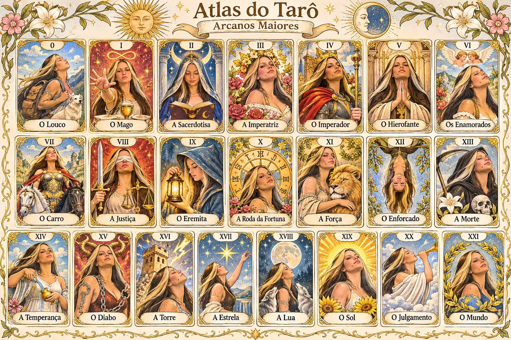

✦ Jardim Solar ✦
Um universo de símbolos,
luz e descobertas.
Conheça os 22 Arcanos Maiores em uma coleção ilustrada em tons de ouro, céu azul e flores. Explore os significados e faça sua tiragem simbólica.
O atlas completo
22 cartas · arte original em português
Cada carta pode ser aberta individualmente na seção Cartas.
Atlas dos Arcanos Maiores
A coleção completaSelecione uma carta na galeria para descobrir seu significado.
As 22 cartas
Sua tiragem
Um convite à reflexãoEscolha o formato e revele suas cartas. Cada tiragem é aleatória, sem repetição.
Modo selecionado: 1 carta
Significado
Para refletir
✦ ARCANA — Jardim Solar ✦
As interpretações são simbólicas e não substituem decisões pessoais ou aconselhamento profissional.